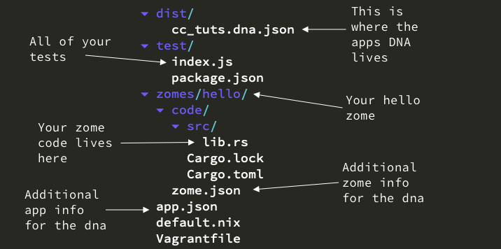

Hello Holo Tutorial¶
Let's begin with the classic Hello World Holo tutorial!
You will see it's super easy to create a distributed application with Holochain.
Setup¶
- Complete the installation guide. This will give you an app development environment including the Holochain developer tool
hc. - Open up a terminal (command prompt in Windows).
- Enter the development environment.
macOS/Linux (you'll remember this command from the installation tutorial):
Windows (do this in the place where you installed Holochain):nix-shell https://holochain.love
vagrant up vagrant ssh nix-shell https://holochain.love
Initializing your new app¶
Pick a new home for all your future Holochain applications to live. Something like home_directory/holochain/.
Then create a coreconcepts folder for this tutorial series:
cd ~ mkdir holochain cd holochain mkdir coreconcepts cd coreconcepts
Time to put the holochain command line tool (hc) to work and make your app.
Initialize a new app and enter the app directory:
Run in nix-shell
hc init cc_tuts
cd cc_tuts
Compile¶
It's an always good to frequently compile your app. That way you catch any mistakes early on.
Give it a go by asking hc to package your app:
Run in nix-shell
hc package
Packaging your app means you are compiling the code into a DNA file and getting it ready to be run.
You should see a successful compilation like this:
Created DNA package file at "/Users/username/holochain/testing_tuts/hello_holo/dist/hello_holo.dna.json" DNA hash: QmY7rhg4sf6xqQMRL1u1CnXVgmamTfxC59c9RaoFqM2eRs
Generate a zome¶
Your app doesn't really do too much right now because it needs a zome. A zome is Holochain's way of organizing code into nice units that perform a certain task (like saying hello).
Generate a zome called hello inside the zome's folder:
Run in nix-shell
hc generate zomes/hello rust-proc
Compile¶
Run in nix-shell
hc package
Zomes can take a little while to compile the first time. Compiling will be much faster the next time you do it. Feel free to move on with the tutorial while your app compiles.
If all went well you should see:
> cargo build --release --target=wasm32-unknown-unknown --target-dir=target Compiling hello v0.1.0 (/Users/username/holochain/core_concepts/hello_hollo/zomes/hello/code) Finished release [optimized] target(s) in 11.95s > cargo build --release --target=wasm32-unknown-unknown --target-dir=target Finished release [optimized] target(s) in 0.50s Created DNA package file at "/Users/username/holochain/core_concepts/hello_hollo/dist/hello_hollo.dna.json" DNA hash: QmdNyxke1Z9Kunws4WUXHnt4cdKQnPogC7YPpfQx67fo1z
Folder layout¶
Look at the folder layout¶

Open the lib.rs file¶
The zome is a Rust project and makes use of macros so you can avoid writing a lot of boilerplate code. The main file you will be editing is hello_hollo/zomes/code/src/lib.rs.
Open up the lib.rs file in an editor and let's have a look at the generated code.
The following are all the imports. You are telling Rust, "hey, I need things from all these crates in order to do my job."
#![feature(proc_macro_hygiene)] extern crate hdk; extern crate hdk_proc_macros; extern crate serde; #[macro_use] extern crate serde_derive; extern crate serde_json; extern crate holochain_json_derive;
Next are the use statements. They are saying, "I want to use these specific things from the above crates."
You only need a few items for this tutorial so go ahead and remove the others:
#![feature(proc_macro_hygiene)] - #[macro_use] extern crate hdk; extern crate hdk_proc_macros; extern crate serde; #[macro_use] extern crate serde_derive; extern crate serde_json; - #[macro_use] extern crate holochain_json_derive; use hdk::{ - entry_definition::ValidatingEntryType, error::ZomeApiResult, }; - use hdk::holochain_core_types::{ - entry::Entry, - dna::entry_types::Sharing, - }; - use hdk::holochain_json_api::{ - json::JsonString, - error::JsonError - }; - use hdk::holochain_persistence_api::{ - cas::content::Address - }; use hdk_proc_macros::zome;
use hdk::{ error::ZomeApiResult, }; use hdk_proc_macros::zome;
There are a few sections of generated code that are not useful for this tutorial.
Remove the following piece of code:
- #[derive(Serialize, Deserialize, Debug, DefaultJson,Clone)] - pub struct MyEntry { - content: String, - }
The my_zome module is where all your zome code live. #[zome] is a procedural macro that says that the following module defines all the things that Holochain should know about this zome. It saves you writing lots of code.
Change it to hello_zome for this tutorial series:
#[zome] - mod my_zome { + mod hello_zome {
The init function is run when a user starts the app for the first time. Every zome defines this function so it can do some initial setup tasks. In this zome it doesn't do anything.
#[init] fn init() {
Return success with the empty value (). In Rust () is called the unit type and is similar (though not identical) to a void type in other languages.
Ok(()) }
This required function is run at application start too, once by the new user and once by the existing peers. It checks that the user is allowed to join the network. In this case it gives everyone a free pass.
#[validate_agent] pub fn validate_agent(validation_data: EntryValidationData<AgentId>) { Ok(()) }
Remove the following template code:
- #[entry_def] - fn my_entry_def() -> ValidatingEntryType { - entry!( - name: "my_entry", - description: "this is a same entry defintion", - sharing: Sharing::Public, - validation_package: || { - hdk::ValidationPackageDefinition::Entry - }, - validation: | _validation_data: hdk::EntryValidationData<MyEntry>| { - Ok(()) - } - ) - } - - #[zome_fn("hc_public")] - fn create_my_entry(entry: MyEntry) -> ZomeApiResult<Address> { - let entry = Entry::App("my_entry".into(), entry.into()); - let address = hdk::commit_entry(&entry)?; - Ok(address) - } - - #[zome_fn("hc_public")] - fn get_my_entry(address: Address) -> ZomeApiResult<Option<Entry>> { - hdk::get_entry(&address) - }
A note about return values¶
You'll often see Rust functions returning some sort of
Resultvalue. This is a special Rust type that can either beOk(some_value)to show that the function succeeded orErr(some_error)to report an error. All required Holochain functions, such as init and validators, are expected return a special result type calledZomeApiResult, which shuttles data back and forth between your app and the conductor. It also automatically converts data to JSON and back, so it makes sense to use it in your public functions too.
Add a function to say hello :)¶
Now tell the zome to return Hello Holo from a public function.
Locate the validate_agent function:
pub fn validate_agent(validation_data: EntryValidationData<AgentId>) { Ok(()) }
You're going to put your public zome function after it.
The hc_public procedural macro will turn the function directly below it into a public function that GUIs, other zomes, and DNAs can call. It takes note of the function's name, the parameters it accepts, and the type of value it returns, so Holochain can call it properly.
Add the hc_public macro:
#[zome_fn("hc_public")]
The function hello_holo takes no arguments and returns a Holochain result type. We're also telling Holochain that if the result is Ok then it will contain a string.
Start the function:
fn hello_holo() -> ZomeApiResult<String> {
Return an Ok result that contains our greeting. into() is a bit of Rust oddness that just means "turn this slice into a String":
Ok("Hello Holo".into()) }
Compile¶
Check your code
#![feature(proc_macro_hygiene)] extern crate hdk; extern crate hdk_proc_macros; extern crate serde; #[macro_use] extern crate serde_derive; extern crate serde_json; extern crate holochain_json_derive; use hdk::{ error::ZomeApiResult, }; use hdk_proc_macros::zome; #[zome] mod hello_zome { #[init] fn init() { Ok(()) } #[validate_agent] pub fn validate_agent(validation_data: EntryValidationData<AgentId>) { Ok(()) } #[zome_fn("hc_public")] fn hello_holo() -> ZomeApiResult<String> { Ok("Hello Holo".into()) } }
If you do find any errors, remember to fix them before moving on. You can always get help on the forum.
Run in nix-shell
hc package
Talk to your app through HTTP¶
To interact with your application you can run it in HTTP mode.
Run in nix-shell
hc run -i http
You can send a POST message to your app using curl, a little command for making HTTP requests. (It's included in the Holochain dev environment.)
You will need to open a new terminal window and enter the nix-shell again:
nix-shell https://holochain.love
Enter the following request, which will call the hello_holo function and return the result:
Run in nix-shell
curl -X POST -H "Content-Type: application/json" -d '{"id": "0", "jsonrpc": "2.0", "method": "call", "params": {"instance_id": "test-instance", "zome": "hello", "function": "hello_holo", "args": {} }}' http://127.0.0.1:8888
And you should get back your string from the hello_holo function:
{"jsonrpc":"2.0","result":"{\"Ok\":\"Hello Holo\"}","id":"0"}
Congratulations --- you have created your first distributed Holochain application!